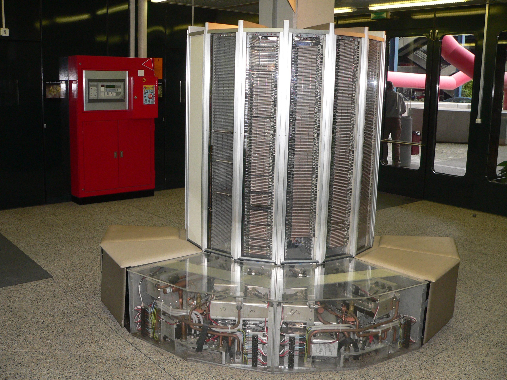
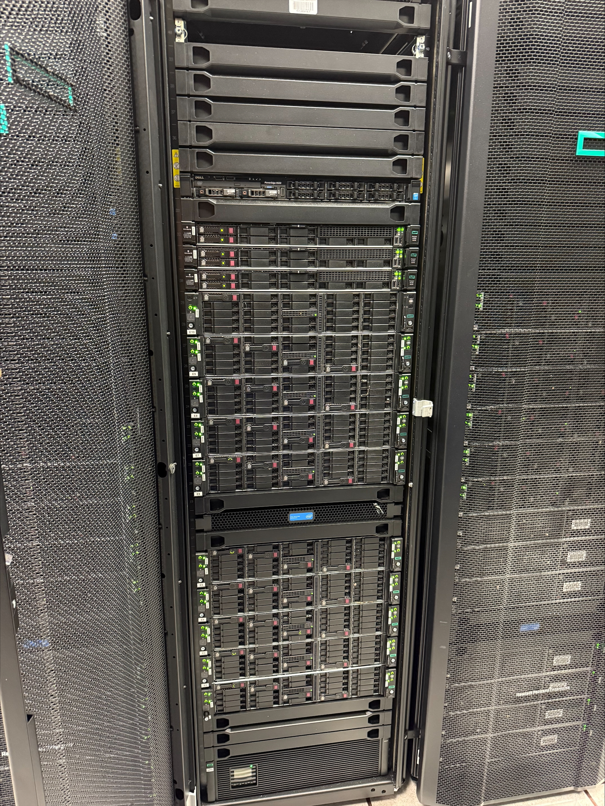
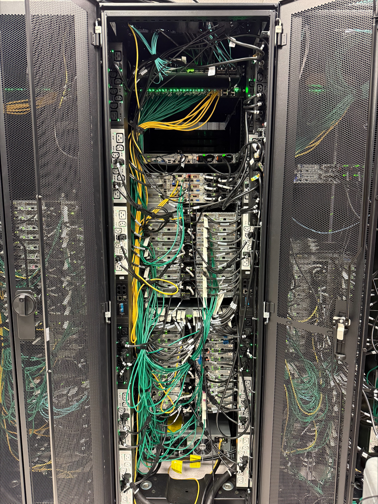
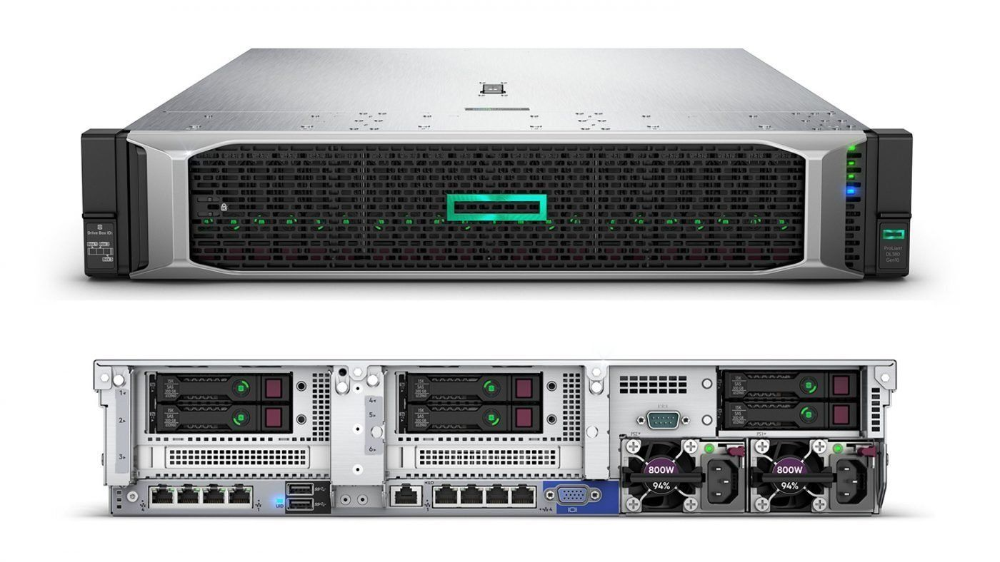
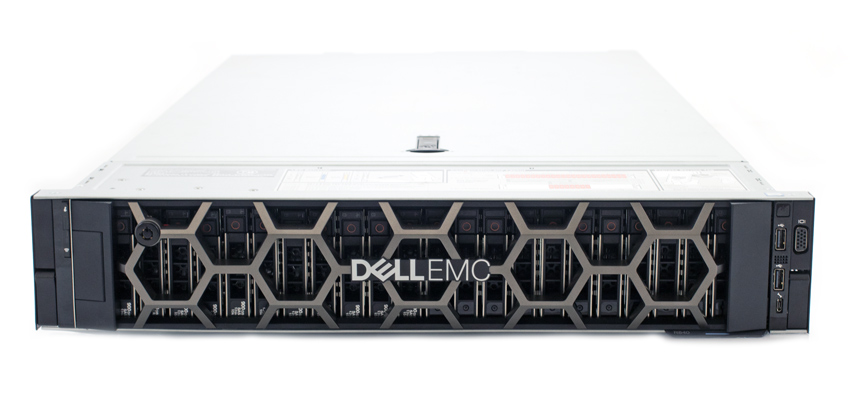
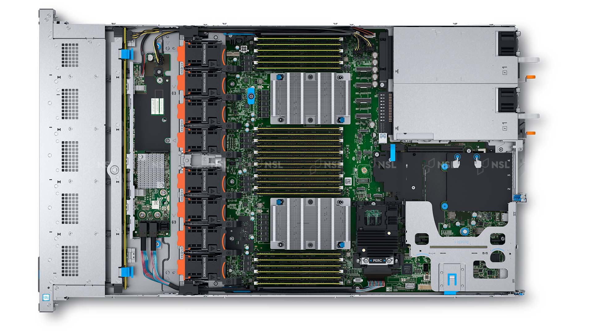

Content from Supercomputing: Concepts
Last updated on 2025-08-18 | Edit this page
Estimated time: 60 minutes
Overview
Questions
- “What is supercomputing?”
- “Why I could need a supercomputer?”
- “How a supercomputer compares with my desktop or laptop computer?”
Objectives
- “Learn the main concepts of supercomputers”
- “Learn some use cases that justify using supercomputers.”
- “Learn about HPC cluster a major category of supercomputers.”
Introduction
The concept of “supercomputing” refers to the use of powerful computational machines for the purpose of processing massively and complex data or conduct large numerical or symbolic problems using the concentrated computational resources. In many cases supercomputers are build from multiple computer systems that are meant to work togheter in parallel. Supercomputing involves a system working at the maximum potential and whose performance is larger of a normal computer.
Sample use cases include weather, energy, life sciences, and manufacturing.
Software concepts
Processes and threads
Threads and processes are both independent sequences of execution. In most cases the computational task that you want to perform on an HPC cluster runs as a single process that could eventually span across multiple threads. You do not need to have a deep understanding of these two concepts but at least the general differenciation is important for scientific computing.
- Process: Instance of a program, with access to its own memory, state and file descriptors (can open and close files)
- Thread: Lightweight entity that executes inside a process. Every process has at least one thread and threads within a process can access shared memory.
A first technique that codes use to accelerate execution is via multithreading. Almost all computers today have several CPU cores on each CPU chip. Each core is capable of its own processing meaning that you can from a single process span multiple threads of execution each doing its own portion of the workload. As all those threads execute inside the same process and can see the same memory allocated to the process threads can be organized to divide the workload. The various CPU cores can run different threads and achieve an increase of performance as a result. In scientific computing this kind of parallel computing is often implemented using OpenMP but there are several other mechanisms of multicore execution that can be implemented.
The differences between threads and processes tend to be described in a language intended for computer scientists. See for example the discussion “What is the difference between a process and a thread?”
If the discussion above end up being over technical this resouce “Process vs Thread” address the difference from a more informal perspective.
The use of processes and threads is critical in type of parallelization your code can use and will determine how/where you will run your code. Generally speaking there are three kinds of parallelization:
Distributed-memory applications where multiple processes (instances of a program) can be run on one or more nodes. This is the kind of parallelization used by codes that use the Message Passing Interface (MPI). We will discuss in more detail later in this episode.
Shared-memory or Multithreaded applications use one or more CPU cores but all the processing must happen on a single node. One example of this in scientific computing is the use of OpenMP of OpenACC by some codes.
Hybrid parallelization applications combine distributed and multithreading parallelism so you can achieve the best performance. Different processes can be run on one or more nodes and each process can span multiple threads and use efficiently several CPU cores on the same node. The challenge with this parallelization is the balance between threads and processes as we will discusse later.
Accelerated or GPU-accelerated applications use accelerators such as GPUs that are inherently parallel in nature. Inside this devices multiple threads take place.
Parallel computing paradigms
Parallel computing paradigms can be broadly categorized into shared memory and distributed memory models, with further distinctions within each. These models dictate how processes access and share data. This influencing the design and scope of parallel algorithms.
Shared-Memory
Computeres today have several CPU cores printed inside a single CPU chip and HPC nodes usually have 2 or 4 CPUs and those CPUs can see all the memory installed on the node. All CPU cores sharing all the memory of the node allows for a kind of parallelization where we need to do the same operations to a big pool of data and we can assigned several cores to work on chunks of the data knowing that the results of the operation can be aggregated on the same memory that is visible to all the cores at the end of the procedure.
Multithreading parallelism is the use of several CPU cores by spaning several threads on a single process so data can be processed across the namespace of the process. OpenMP is the de-facto solution for multithreading parallelism. OpenMP is an application programming interface (API) for shared-memory (within a node) parallel programming in C, C++ and Fortran
- OpenMP provides a collection of compiler directives, library routines and environment variables.
- OpenMP is widely supported by all major compilers, including GCC, Intel, NVIDIA, IBM and AMD Optimizing C/C++ Compiler (AOCC).
- OpenMP is portable and can be used one various architectures (Intel, ARM64 and others)
- OpenMP is de-facto standard for shared-memory parallelization, there are other options such as Cilk, POSIX threads (pthreads) and specialized libraries for Python, R and other programming languages.
Applications can be parallelized using OpenMP by introducing minor changes to the code in the form of lines that looks like comments and are only interpreted by compilers that support OpenMP. This is a small example
C
#include <omp.h>
#define N 1000
#define CHUNKSIZE 100
main () {
int i, chunk;
float a[N], b[N], c[N];
/* Some initializations */
for (i=0; i < N; i++) a[i] = b[i] = i * 1.0;
chunk = CHUNKSIZE;
#pragma omp parallel for \
shared(a, b, c, chunk) private(i) \
schedule(static, chunk)
for (i=0; i < n; i++) c[i] = a[i] + b[i];
}If you are not a developer what you should know is that OpenMP is a solution to add parallelism to a code and with the right flags during compilation OpenMP can be enabled and the resulting code can work more efficiently on compute nodes.
Message Passing
In the message passing paradigm, each processor runs its own program and works on its own data.
In the message passing paradigm, as each process is independent and has its own memory namespace, different processes need to coordinate the work by sending and receiving messages. Each process must ensure that each it has correct data to compute and write out the results in correct order.
The Message Passing Interface (MPI) is a standard for parallelizing C, C++ and Fortran code to run on distributed memory systems such as HPC clusters. While not officially adopted by any major standards body, it has become the de facto standard (i.e., widely used and several implementations created).
There are multiple open-source implementations, including OpenMPI, MVAPICH, and MPICH along with vendor-supported versions such as Intel MPI.
MPI applications can be run within a shared-memory node. All widely-used MPI implementations are optimized to take advantage of faster intranode communications.
Although MPI is often synonymous with distributed memory parallelization, other options exist such as Charm++, Unified Paralle C, and X10
Example of a code using MPI
FORTRAN
PROGRAM hello_mpi
INCLUDE 'mpif.h'
INTEGER :: ierr, my_rank, num_procs
! Initialize the MPI environment
CALL MPI_INIT(ierr)
! Get the total number of processes
CALL MPI_COMM_SIZE(MPI_COMM_WORLD, num_procs, ierr)
! Get the rank of the current process
CALL MPI_COMM_RANK(MPI_COMM_WORLD, my_rank, ierr)
! Print the "Hello World" message along with the process rank and total number of processes
WRITE(*,*) "Hello World from MPI process: ", my_rank, " out of ", num_procs
! Finalize the MPI environment
CALL MPI_FINALIZE(ierr)
END PROGRAM hello_mpiThe exanple above is pretty simple. MPI applications are usually dense and written to be very efficient in their communication. Data is explicitly communicated between processes using point-to-point or collective calls to MPI library routines. If you are not a programmer or application developer, you do not need to know MPI. You should just be aware that it exists, recognize when a code can use MPI for parallelization and that if you are building your executable, use the appropriate wrappers that allow you to create the executable and run the code.
Amdahl’s law and limits on scalability
We start defining speedup as the ratio between the computing time needed by one processor and by N processors.
\[U(N) = \frac{T(1 proc)}{T(N procs)}\]
The speedup is a very general concept and applies to normal life activities. If you need to cut the grass and that take you 1 hour, having someone with a mower can help you and reduce the time to 30 minutes. In that case the speedup is 2. There are always limits to speedup, using the same analogy it is very unlikely that having 60 people with their mowers suceeed in cutting the grass in 1 minute. We will now discuss the limits of scalability from the theoretical point of view and move into more practical considerations.
Amdahl’s law describes the absolute limit on the speedup (A) of a code as a function of the proportion of the code that can be parallelized and the number of processors (CPU cores). This is the most fundamental law of parallel computing!
- P is the fraction of the code that run in parallel
- S is the fraction of the code that run serial (S = 1– P)
- N = number of processors (CPU cores)
- A(N) is the speedup as a function of N
\[U(N) = \frac{1}{(1 - P) + \frac{P}{N}}\]
Consider the limit of speedup as the number of processors goes to infinity. This theoretical speedup depends only on the fraction of the code that runs serial
\[\lim_{N \to \infty} U(N) = \lim_{N \to \infty} \frac{1}{(1 - P) + \frac{P}{N}} = \frac{1}{1– P} = \frac{1}{S}\]
Amdahl’s Law demonstrates the theoretical maximum speedup of an overall system and the concept of diminishing returns. Plotted below is the logarithmic parallelization vs linear speedup. If exactly 50% of the work can be parallelized, the best possible speedup is 2 times. If 95% of the work can be parallelized, the best possible speedup is 20 times. According to the law, even with an infinite number of processors, the speedup is constrained by the unparallelizable portion.

Amdahl’s Law is an example of the law of diminishing returns, ie. the decrease in marginal (incremental) output (speedup) of a production process as the amount of a single factor of production is incrementally increased (processors). The law of diminishing returns (also known as the law of diminishing marginal productivity) states that in a productive process, if a factor of production continues to increase, while holding all other production factors constant, at some point a further incremental unit of input will return a lower amount of output.
The Amdahl’s law just sets the theoretical upper limit on speedup, in real-life applications there are other factors that affect scalability. The movement of data often limits even more the scalability. Irregularities of the problem, for example using (non-cartesian grids) or uneven load balance when the the partition of domains leave some processors with less data than most others.
In summary we have this factors limiting scalability
- The theoretical Amdahl’s law
- Scaling limited by the problem size
- Scaling limited by communication overhead
- Scaling limited by uneven load balancing
However, HPC clusters are widely used today and some scientific research could not be possible without the use of supercomputers. Most parallel applications do not scale to thousands or even hundreds of cores. Some applications achieve high scalability by the employ several strategies
- Grow the problem size with the number of core or nodes (Gustafson’s Law)
- Overlap communications with computation
- Use dynamic load balancing to assign work to cores as they become idle
- Increase the ratio of computation to communications
Weak versus strong scaling
High performance computing has two common notions of scalability. So far we have shown only the scaling fixing the problem size and adding more processors. However, we can also consider the scaling of problems of increasing size by fixing the size per processor. In summary:
- Strong scaling is defined as how the solution time varies with the number of processors for a fixed total problem size.
- Weak scaling is defined as how the solution time varies with the number of processors for a fixed problem size per processor.
Hardware concepts
Supercomputers and HPC clusters
There are many kinds of supercomputers, some of them are build from scratch using specialized hardware, examples of those supercomputers are the iconic CRAY-1 (1976). This machine was the world’s fastest supercomputer from 1976 to 1982. It measured 8½ feet wide by 6½ feet high and contained 60 miles of wires. It achieve a performance of 160 megaflops which is less powerfull than modern smartphones. Many of the CRAY systems from the 80’s and 90’s where machines designed as a single entity using vector processors to achieve their extraordinary performance of their time.

Modern supercomputers today are usually HPC clusters. HPC clusters consist of multiple compute nodes organized in racks and itnterconnected by one or more networks. Each computer nodes is a computer itself. These aggregates of computers are made to work as a system thanks to sofware that orchestrates their operation and the fast networks that allows data to be moved from one node to another very efficiently.

On each compute node contains one or more (typically two, sometimes four) multicore processors, the CPUs and their internal CPU cores are resposible for the computational capabilities of the node.
Today the computational power comming from CPUs alone is not enough so they receive extra help from other chips in the node specialized in certain computational tasks. These electronic components are called accelerators, among them the GPUs. GPUs are electronic devices that are naturally efficient for certain parallel tasks. They outperform CPUs on a narrow scope of applications. With the current
To effectively use HPC clusters, we need applications that have been parallelized so that they can run on multiple CPU cores. If the calculation is even more demanding even multiple nodes using distributed parallel computing and using GPUs if the algorithm performs efficiently on this kind of acccelerators.
Hierachy of Hardware on an HPC Cluster
At the highest level is the rack. A rack is just a structure to pile up the individual nodes. An HPC cluster can be built from more normal computers but it is often the for the nodes to be rackable, ie, they can be stack on a rack to create a more dense configuration and facilitate administration.


Each node on the rack is a computer on itself. Sometimes rack servers are grouped in chassis but often they are just individual machines as shown below.



Each compute node has a mainboard, one or more CPUs, RAM modules and network interfaces. They have all that you expect from a computer except for a monitor, keyboard and mouse.
Microprocessor Trends (Performance, Power and Cores)
Microprocessor trends has been collected over the years and can be found on Karl Rupp Github Page

- “Supercomputers are far more powerful than desktop computers”
- “Most supercomputers today are HPC clusters”
- “Supercomputers are intended to run large calculations or simulations that takes days or weeks to complete”
- “HPC clusters are aggregates of machines that operate as a single entity to provide computational power to many users”
Content from The Life Cycle of a Job
Last updated on 2025-08-18 | Edit this page
Estimated time: 60 minutes
Overview
Questions
- “Which are the typical steps to execute a job on an HPC cluster?”
- “Why I need to learn commands, edit files and submit jobs?”
Objectives
- “Execute step by step the usual procedure to run jobs on an HPC cluster”
The Life Cycle of a Job
In this episode will will follow some typical steps to execute a calculation using an HPC cluster. The idea is not to learn at this point the commands. Instead the purpose is to provide a reason to why the commands we will learn in future episodes are important to learn and grasp an general perspective of what is involved in using an HPC to carry out research.
We will use a case very specific in Physics, more in particular in Materials Science. We will compute the atomic and electronic structure of Lead in crystalline form. Do not worry about the techical aspects of the particular application, similar procedures apply with small variations in other areas of science: chemistry, bioinformatics, forensics, health sciences and engineering.
Creating a folder for my first job.
The first step is to change our working directory to a location where we can work. Each user has a scratch folder, a folder where you can write files, is visible across all the nodes of the cluster and you have enough space even when large amounts of data are used as inputs or generated as output.
~$ cd $SCRATCHI will create a folder there for my first job and move my working directory inside the newly created folder.
~$ mkdir MY_FIRST_JOB
~$ cd MY_FIRST_JOBGetting an input file for my simulation
Many scientific codes use the idea of an input file. An input file is just a file or set of files that describe the problem that will be solved and the conditions under which the code should work during the simulation. Users are expected to write their input file, in our case we will take one input file that is ready for execution from one of the examples from a code called ABINIT. ABINIT is a software suite to calculate the optical, mechanical, vibrational, and other observable properties of materials using a technique in applied quantum mechanics called density functional theory. The following command will copy one input file that is ready for execution.
~$ cp /shared/src/ABINIT/abinit-9.8.4/tests/tutorial/Input/tbasepar_1.abi .We can confirm that you have the file in the current folder
~$ ls
tbasepar_1.abiand get a pick into the content of the file
~$ cat tbasepar_1.abi
#
# Lead crystal
#
#Definition of the unit cell
acell 10.0 10.0 10.0
rprim
0.0 0.5 0.5
0.5 0.0 0.5
0.5 0.5 0.0
#Definition of the atom types and pseudopotentials
ntypat 1
znucl 82
pp_dirpath "$ABI_PSPDIR"
pseudos "Pseudodojo_nc_sr_04_pw_standard_psp8/Pb.psp8"
#Definition of the atoms and atoms positions
natom 1
typat 1
xred
0.000 0.000 0.000
#Numerical parameters of the calculation : planewave basis set and k point grid
ecut 24.0
ngkpt 12 12 12
nshiftk 4
shiftk
0.5 0.5 0.5
0.5 0.0 0.0
0.0 0.5 0.0
0.0 0.0 0.5
occopt 7
tsmear 0.01
nband 7
#Parameters for the SCF procedure
nstep 10
tolvrs 1.0d-10
##############################################################
# This section is used only for regression testing of ABINIT #
##############################################################
#%%<BEGIN TEST_INFO>
#%% [setup]
#%% executable = abinit
#%% [files]
#%% files_to_test = tbasepar_1.abo, tolnlines=0, tolabs=0.0, tolrel=0.0
#%% [paral_info]
#%% max_nprocs = 4
#%% [extra_info]
#%% authors = Unknown
#%% keywords = NC
#%% description = Lead crystal. Parallelism over k-points
#%%<END TEST_INFO>In this example, a single file contains all the input needed. Some other files are used but the input provides instructions to locate those extra files. We are ready to write the submission script
Writing a submission script
A submission script is just a text file that provide information
about the resources needed to carry out the simulation that we pretend
to execute on the cluster. We need to create text file and for that we
will use a terminal-based text editor. The simplest to use is called
nano and for the purpose of this tutorial it is more than
enough.
~$ nano runjob.slurm
Type the following inside nano window and leave the editor using the command Ctrl+X. Nano will ask if you want to save the changes introduced to the file. Answer with Y It will show the name of your file for confirmation, just click Enter and the file will be saved.
BASH
#!/bin/bash
#SBATCH --job-name=lead
#SBATCH --nodes=1
#SBATCH --cpus-per-task=1
#SBATCH --ntasks=4
#SBATCH --partition=standby
#SBATCH --time=4:00
module purge
module load atomistic/abinit/9.8.4_intel22_impi22
mpirun -np 4 abinit tbasepar_1.abi
Submitting the job
We use the submission script we just wrote to request the HPC cluster to execute our job when resources on the cluster became available. The job is very small so it is very likely that will execute inmediately. However, in many cases, jobs will remain in the queue for minutes, hours or days depending on the availability of resources on the cluster and the amount of resources requested. Submit the job with this command:
~$ sbatch runjob.slurmYou will get a JOBID number. This is a number that indentify your job. You can check if your job is in queue or executed using the commands
This command to list your jobs on the system:
~$ squeue --meIf the job is in queue or running you can use
~$ scontrol show job <JOBID>If the job already finished use:
~$ sacct -j <JOBID>What we need to learn
The steps above are very typical regardless of the particular code and area of science. As you can see to complete a simulation or any other calculation on an HPC cluster you need.
- Execute some commands. You will learn the basic Linux commands in the next episode.
- Edit some text files. We will present 3 text editors and among them
nano, the editor shown above. - Select a software to run. We are using ABINIT and for it we are using some environment modules to access this software package.
- Submit and monitor jobs on the cluster. All those are Slurm commands and we will learn about them.
In addition to this we will also learn about data transfers to copy files in and out the HPC cluster and tmux, a terminal multiplexer that will facilitate your work on the terminal.
- “To execute jobs on an HPC cluster you need to move across the filesystem, create folders, edit files and submit jobs to the cluster”
- “All these elements will be learned in the following episodes”